프론티어 모델 심층 탐구와
AI 도구 카탈로그
오늘 8시간 과정은 세 단계로 진행합니다. 첫째, 오후 2시 30분까지 수강생 자기소개를 마친 뒤 ChatGPT·Claude·Gemini·Perplexity·Grok·Z.AI·중국 3종 챗봇과 Ollama·LM Studio·AnythingLLM·MSTY 같은 로컬 LLM 도구를 리버스 엔지니어 방식으로 살펴봅니다. 둘째, 오후 5시 10분까지 플래그십 4종의 Projects·Custom GPTs·Skills·Computer Use 등 고급 기능을 실습하고, 문서·이미지·영상·음성·회의록·번역·학술·검색·데이터 카테고리별 대표 도구를 정리합니다. 셋째, 오후 5시 30분까지 공공 업무에 적합한 추천 도구 목록과 새 도구 판단용 6단계 체크리스트를 작성해 마무리합니다.
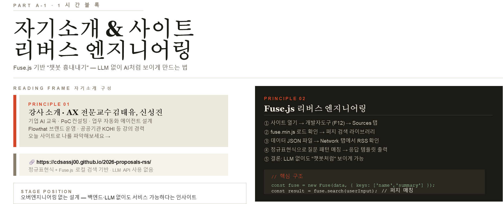
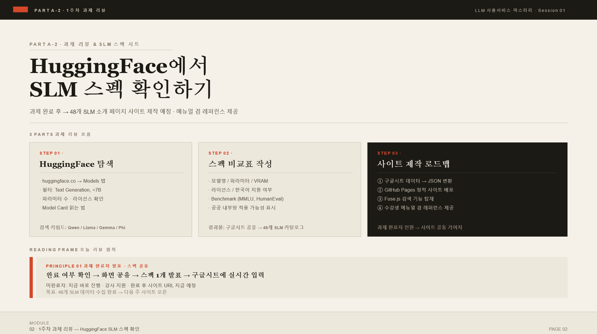
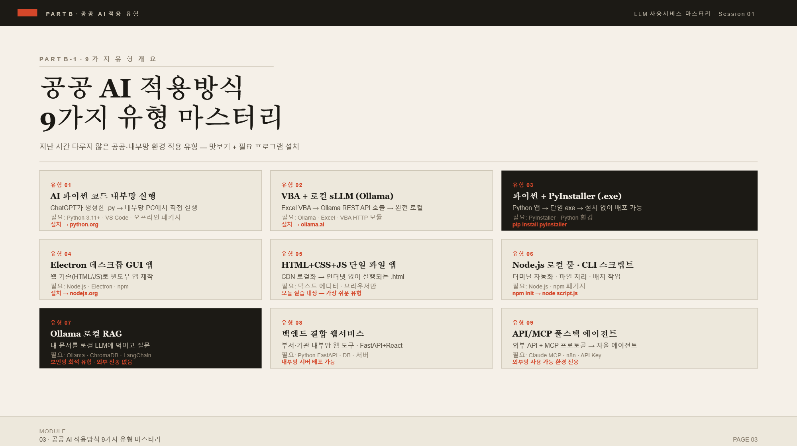
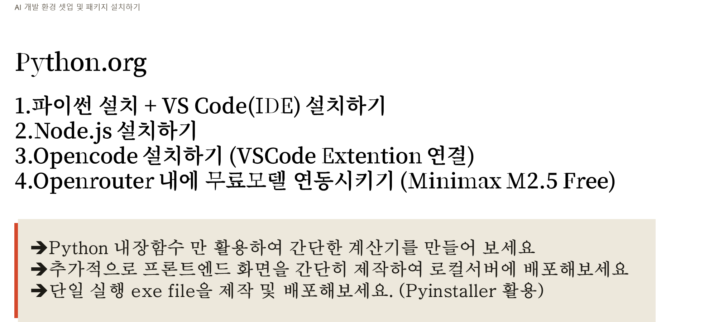
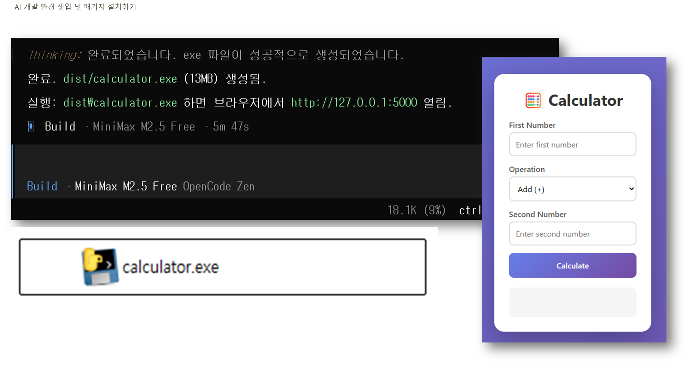
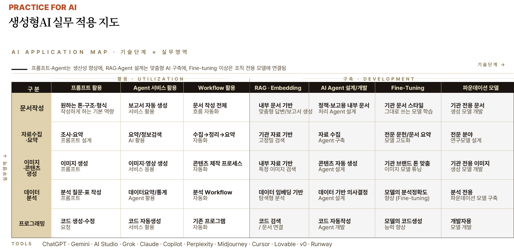
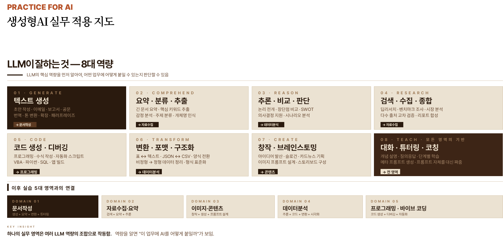
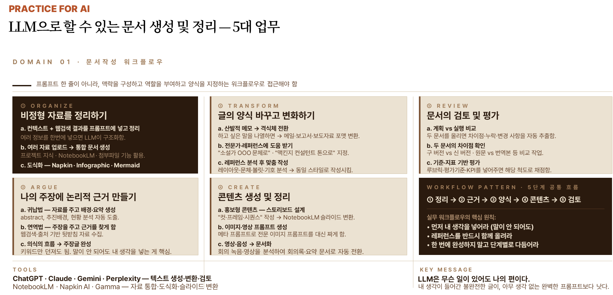
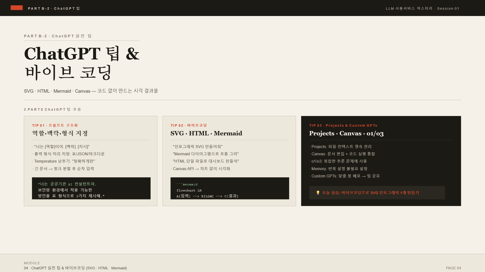
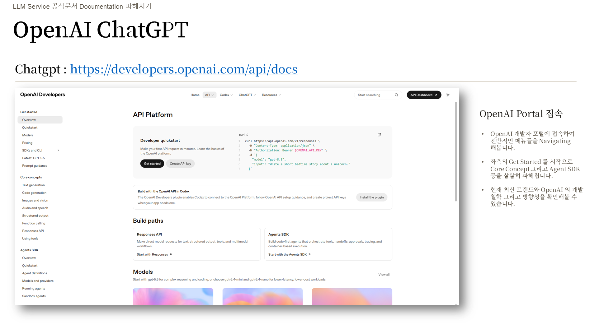
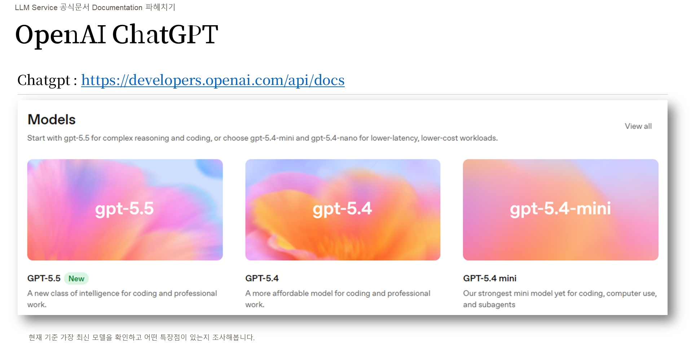
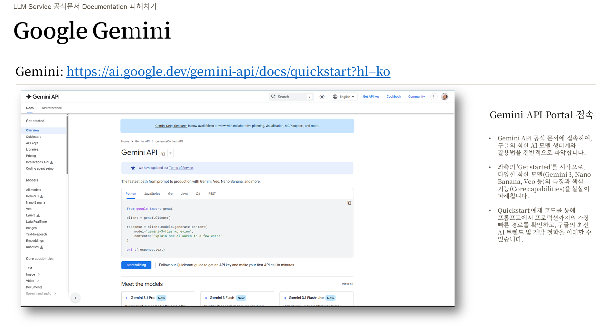
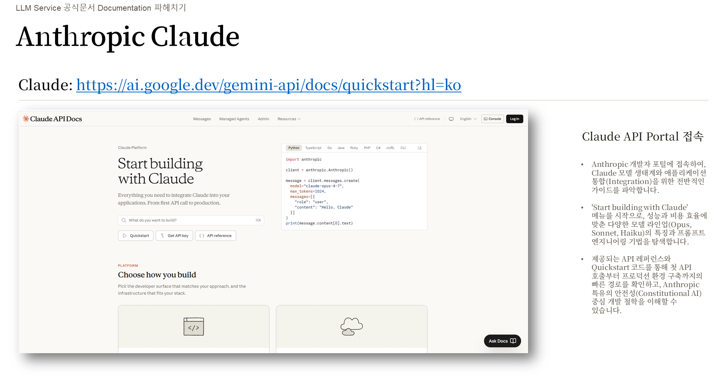
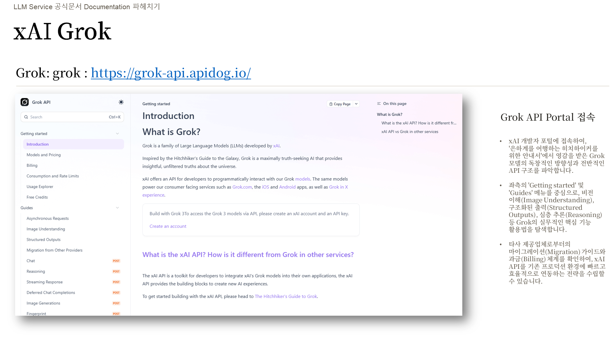
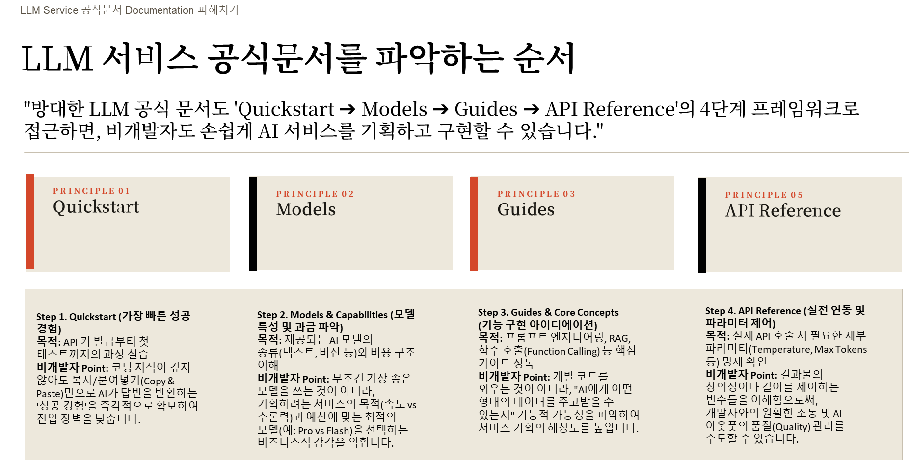
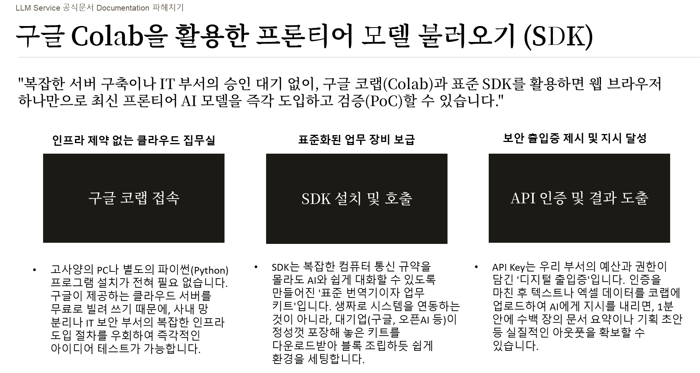
플래그십 4종(ChatGPT·Claude·Gemini·Perplexity)의 기본 채팅창은 누구나 사용합니다. 오늘은 Projects(파일·지침을 묶는 작업 공간), Custom GPTs(시스템 프롬프트 패키지), Skills(SKILL파일 모듈), Computer Use(화면 직접 조작) 등 모델별로 4~6개의 고급 기능을 직접 사용하면서 화면 흐름을 확인합니다.
AI 도구는 매달 새로 출시됩니다. 첫째, 10개 카테고리로 묶고 카테고리마다 대표 5개를 살펴봅니다. 둘째, 본인 업무에 맞는 도구 10가지를 정리합니다. 셋째, 새 도구가 나오면 같은 카테고리에 추가합니다. 나머지는 빠른 파악 루틴으로 판단합니다.
하나로 묶는 작업 공간
= 재사용 단위 "나만의 GPT"
운영하는 이유
커스텀 GPTs를 활용함에 있어서 가장 중추적인 역할을 하는 것은 바로 '메모리' 부분입니
첫째, 사용자가 특정 정보를 입력하면 GPTs가 중요한 내용을 자동으로 메모리에 저장합니다.
둘째, 다음 대화 시작 시 저장된 메모리를 불러와 맥락을 유지합니다.
셋째, 사용자가 명시적으로 "이것을 기억해 주세요"라고 요청할 수도 있습니다. 메모리에 저장되는 정보는 작업 형식, 출력 스타일, 자주 사용하는 도구명, 프로젝트 배경, 금지 표현 목록 등입니다.
예를 들어 "존댓말로 작성", "비유 표현 금지", "첫째·둘째 열거 사용" 같은 규칙을 한 번 설정하면 이후 대화에서 반복 지시 없이 자동 적용됩니다.
메모리 관리는 설정 메뉴에서 확인 및 삭제가 가능합니다. 불필요한 메모리는 언제든 제거할 수 있으며, 메모리 기능 자체를 비활성화할 수도 있습니다.
첫째, Zapier 연동 시 Zapier Actions를 GPTs의 Actions 탭에 추가하고 API Key를 입력합니다. 이를 통해 Gmail 전송, Google Sheets 데이터 추가, Slack 메시지 발송 등을 자동화할 수 있습니다.
둘째, Google Calendar API 연동 시 OAuth 2.0 Client ID와 Secret을 발급받아 GPTs Actions에 등록합니다.OpenAPI 스키마 파일(.json)을 업로드하면 일정 조회, 생성, 수정 명령을 자연어로 실행할 수 있습니다.
셋째, 사내 데이터베이스 연동 시 RESTful API 엔드포인트를 구축하고, GET/POST/PUT 메서드별 파라미터와 응답 형식을 JSON Schema로 작성합니다.Authentication 방식은 API Key 또는 Bearer Token을 선택합니다.
넷째, Notion API 연동 예시로는 Internal Integration Token을 발급받아 Authorization 헤더에 Bearer 형식으로 입력하고, 데이터베이스 ID를 명시하면 페이지 생성 및 검색이 가능합니다.
첫째, Short-term Memory는 현재 세션 내에서 주고받은 대화 내용을 임시로 보관합니다. API 호출 시 messages array에 이전 대화를 포함시켜 구현합니다.
둘째, Long-term Memory는 세션이 종료된 이후에도 사용자 정보나 선호도를 데이터베이스에 저장하여 다음 대화 시 활용합니다.
셋째, Context Window는 모델이 한 번에 처리할 수 있는 토큰 수의 한계를 의미하며, GPT는 8K~128K, Claude는 200K까지 지원합니다.
넷째, Memory 관리 전략으로는 요약 기법, 중요 정보 추출, 벡터 DB 활용 등이 있으며, LangChain과 LlamaIndex 같은 프레임워크에서 Memory 모듈을 제공합니다.
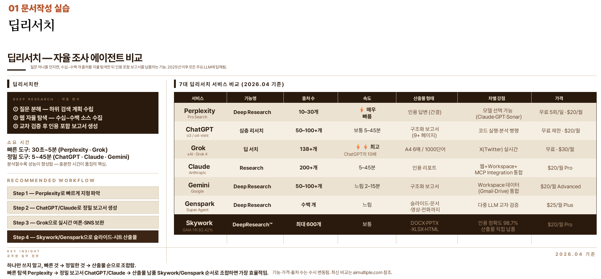
ChatGPT의 대표 고급 기능 두 가지입니다. 첫째, Canvas는 긴 문서·코드·기획안을 구조적으로 편집하는 작업 공간입니다. 채팅과 분리된 전용 편집 화면에서 문단·섹션·코드 블록 단위로 수정할 수 있습니다.
둘째, Agent 모드는 ChatGPT가 웹 탐색, 파일 검색, 앱 연결, 자료 정리, 실행 작업까지 여러 단계를 스스로 수행하는 자동화 기능입니다. 최근에는 단순 검색 수준을 넘어 실제 작업 실행 중심으로 발전했습니다.
- 문단/섹션 단위 선택 수정
- 코드 블록 단위 편집 및 리팩터링
- 긴 문서 버전 관리에 유리
- 채팅과 편집 영역이 분리됨
- 협업형 초안 작성에 적합
- “생성”보다 “정리·개선”에 강함
문서/코드 편집을 위한 AI 작업판입니다.
멀티스텝 자동 실행 · 도구 연결형 AI
- 자동 실행 전에 사람 승인 단계가 반드시 필요합니다
- 파일 저장과 메일 발송은 고위험 단계입니다
- 로그와 실행 내역을 주기적으로 검토합니다
추론 모델은:
- 중간 사고 단계를 길게 생성하고
- 스스로 오류를 검토하며
- 여러 풀이 경로를 비교하고
- 강화학습(RL)으로 더 좋은 사고 과정을 학습합니다.
최근 GPT-5.5 계열은 추론 토큰(reasoning tokens)을 사용해 답변 전에 내부적으로 “생각 시간”을 사용합니다.
최신 추론 모델은 단순 다음 단어 예측을 넘어서,
중간 사고 과정(Chain of Thought)을 더 잘 만들도록 강화학습(RL)을 수행합니다.
모델은:
- 여러 풀이 경로를 생성하고
- 어떤 사고 과정이 더 정확했는지 평가받고
- 좋은 추론 패턴에 보상을 받으며
- 스스로 오류 수정 전략을 학습합니다
최근 reasoning 모델은 답변 생성 전에 내부적으로 긴 사고 과정을 수행합니다. 이를 Test-Time Compute(TTC)라고 부릅니다.
복잡한 문제일수록:
- 더 긴 추론 토큰 생성
- 중간 검토
- 자기 검증
- 다른 풀이 재시도
과정을 수행하며 정답률을 높입니다.
SKILL.md로 저장 · 재사용
| 기능 | 내용 |
|---|---|
| PROJECTS | 업로드한 문서가 모든 대화의 맥락에 자동 포합니다 (Knowledge) |
| 200K CONTEXT | 법령 전문·규정 묶음·회의록 아카이브를 한 번에 처리합니다 |
| SKILL REUSE | 프로젝트 간 재사용과 커뮤니티 공유 스킬 활용이 가능합니다 |
| ZDR 지원 | Zero Data Retention — 민감 업무에 사용하는 옵션입니다 |
Claude Project를 하나 만든 뒤, Knowledge에 부서 지침 PDF·샘플 보고서 3건을 업로드하고 SKILL파일 2~3개("HWPX 보고서" · "민원 답변" 등)를 추가합니다. 동료에게는 프로젝트 URL만 공유하면 됩니다. ChatGPT Custom GPTs는 시스템 프롬프트 한 덩어리지만, Claude Skills는 절차를 모듈로 분리해 호출하는 구조입니다.
즉시 미리보기
마우스·키보드를 직접 조작
프리셋으로 저장
Gem · Workspace 통합
Focus · Labs
조합
소형 모델 구동
ollama run llama3, ollama run qwen3, ollama run gemma 같은 한 줄 명령으로 모델을 구동합니다. 7회차 로컬 RAG의 기본 엔진이며, 5회차 VBA+sLLM 자동화의 백엔드 역할을 합니다. 외부 통신 없이 완전 로컬에서 작동합니다.로컬 모델 관리
RAG Q&A
비교하는 채팅
AI 도구를 여러 카테고리로 나누어 정리합니다. 각 카테고리마다 업무 현장에서 자주 쓰이는 대표 도구를 배치하고, 수강생은 자신의 업무 영역에 맞는 도구를 선정합니다. 선정한 도구는 강의 중 직접 실습하며 주요 기능과 작동 방식을 확인합니다. 새로운 도구가 출시되면 해당 카테고리에 추가해 분류 체계를 유지합니다. 모든 도구를 암기하는 것이 목표가 아니라 업무에 적용 가능한 도구를 탐색하고 실제로 사용해 보는 것이 학습 목표입니다.
| 도구 | 용도 · 강점 |
|---|---|
| GAMMA | 주제 입력 → PPT 자동 제작. 브리핑 슬라이드 초안의 최단 경로. 디자인 템플릿 기본 양호. |
| GENSPARK | 올인원 리서치 + 위키. 정책 리서치 정리에 적합. 재편집 가능한 위키 형태로 반환. |
| NAPKIN | 텍스트 → 다이어그램 자동 변환. 회의 결과를 구조도로 시각화. 발표 보조 이미지 생성. |
| TOME | 서사형 슬라이드 자동 생성 — 스토리텔링이 중요한 브리핑·정책 설명에 적합. |
| BEAUTIFUL.AI | 디자인 자동 조정. 비디자이너 PPT 품질을 기관 표준 수준으로 올립니다. |
도구 이름·기능 나열로 시연하면 동료의 반응이 약합니다. 본인이 자기 부서의 실제 회의 녹음 1건을 Clova Note → Gamma → Beautiful.ai로 돌려 6장짜리 PPT를 먼저 완성한 뒤, 그 결과물 파일을 공유하며 사용 절차를 5분 안에 시연하는 순서로 진행합니다.
| 도구 | 강점 · 용도 |
|---|---|
| MIDJOURNEY | 실사·아트 품질 최상위. 생성 이미지는 Discord/Web에서. 공공 홍보물 메인 비주얼. |
| IDEOGRAM | 텍스트 삽입 이미지 강점. 포스터·카드뉴스 등 문자 삽입 많은 이미지에 최적. |
| FLUX | 오픈 가중치·HuggingFace 실행 가능합니다. 보안 제약 큰 환경의 선택지. |
| NANO BANANA | Google 계열 빠른 편집·합성. 채팅형 이미지 수정 흐름. |
| RECRAFT | 벡터 일러스트·아이콘 특화. 보고서 아이콘·인포그래픽용. |
| MAGNIFIC | 업스케일 전문. 저해상 이미지 복원·기존 자료 재활용. |
| KREA | 스케치 → 실시간 고화질. 아이디어 단계 탐색·편집. |
| PHOTOROOM | 배경 제거·합성 자동화. 홍보물 소재 전처리에 빠릅니다. |
| 도구 | 핵심 | 비고 |
|---|---|---|
| RUNWAY | Gen-4 · 모션 브러시 | 가장 넓은 편집 기능 |
| KLING AI | 극강 현실감 | ⚠ 중국 · 데이터 주의 |
| SORA 2 | OpenAI 영상 엔진 | ChatGPT 통합 |
| PIKA | 짧은 클립 최적화 | 빠른 프로토타입 |
| HAILUO | MiniMax 영상 | ⚠ 중국 · 업로드 주의 |
| 도구 | 핵심 | 공공 활용 |
|---|---|---|
| ELEVENLABS | TTS · 음성 복제 | 안내 방송 · 내레이션 |
| SUNO | 가사 + 장르 → 노래 | 캠페인 징글 |
| UDIO | Suno 대안 | 배경음악 |
LLM
ElevenLabs
Runway·Sora
사람 검수
민감 회의는 Whisper 로컬
영상·PDF 요약 Lilys AI
분업합니다
| 도구 | 특징 |
|---|---|
| EXA | 의미 기반 검색 — 유사 논문·자료·전례 찾기 |
| PHIND | 개발자·기술 특화 검색 — 코드/API 조사 |
| FELO | 다국어 번역 기반 검색 — 해외 정책 리서치 |
| LINER | 하이라이트 + AI 요약 — 장문 기사 정리 |
| 도구 | 특징 |
|---|---|
| JULIUS | CSV·엑셀 업로드 → 차트·통계 자동. 비개발자 분석의 최단 경로. |
| ROWS AI | AI 내장 스프레드시트. 자연어로 집계·시각화 명령. |
| CODE INTERPRETER | ChatGPT 내장 Python 분석 엔진. 설치·계정 분리 불필요합니다. |
| 10 카테고리 | 대표 도구 후보 |
|---|---|
| 01 문서·슬라이드 | Gamma · Genspark · Napkin · Tome · Beautiful.ai |
| 02 이미지 생성 | Midjourney · Ideogram · Flux · Nano Banana · Recraft |
| 03 이미지 편집·업스케일 | Magnific · Krea · Photoroom |
| 04 영상 생성 | Runway · Kling · Sora 2 · Pika · Hailuo |
| 05 음성·음악 | ElevenLabs · Suno · Udio |
| 06 음성→텍스트 | Whisper · Clova Note · Otter · Fireflies |
| 07 번역·언어 | DeepL · Lilys AI |
| 08 논문·학술 | Elicit · Consensus · Scite · SciSpace · ResearchRabbit |
| 09 검색·리서치 | Exa · Phind · Felo · Liner |
| 10 데이터·분석 | Julius · Rows AI · Code Interpreter |
설치 파일 다운로드
ollama --version으로 확인. 디스크 20GB 이상, GPU 없어도 무방.ollama run llama3(또는 qwen2 · gemma)
한 장으로 캡처
자동 생성
결합: CSV 업로드 → Julius에서 차트 즉시 생성.
단계 연결: 데이터 추출 → [Julius] → 보고서 삽입.
보안: Julius 서버 해외 — 비식별화 필수입니다.
완전 로컬 STT
결합: 녹음 파일 → Whisper 로컬 실행 → 텍스트.
보안: 완전 로컬·외부 통신 없음.
적용 과제 연결: 회의록 자동화의 표준 경로입니다.
내부 이식
결합: HuggingFace Spaces에서 감성 분석 모델 테스트 → 5차시 VBA+Ollama로 내부망 구현.
보안: 테스트는 외부, 구현은 완전 내부.
도구 1개를 단독 추천하면 "왜 굳이 그것?"에서 회의가 멈춥니다. 3~4단계 체인으로 제안하면 각 단계의 대안(예: Clova Note 자리에 Whisper 로컬, Gamma 자리에 Genspark)을 표로 비교할 수 있어 부서 합의가 빨라집니다. 오늘 정리한 A~D 4조합은 3회차 워크플로우 오케스트레이션 6가지 타입(문서 취합·데이터 분석·문서 변환·논문 리서치·이미지·영상)의 입력으로 들어갑니다.
도구는 계속 늘어납니다. 오늘 작성한 체크리스트(6단계)와 추천 도구 목록(8칸 카드 양식)은 도구가 100개로 늘어도 형식이 동일합니다. 새 도구가 등장하면 같은 양식에 한 칸씩 답을 채워 추가하면 됩니다.